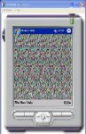
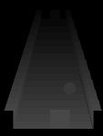
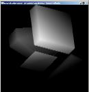
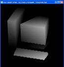

| | The AbSIRD ProjectThe AbSIRD Project is the collective name for all my work in the area of SIRDS. This has been primarily in the area of real-time editors and games, and has spanned many platforms (Win32, Quake II, SDL, PocketPC, TabletPC, .Net, OpenGL, etc.).
| This is a modification of the Quake 2 graphics engine which replaces all the 3d graphics with SIRDS. So you get all the same action and gameplay, but in full real-time SIRDS. |  |
| Now you can draw and create SIRDS on the run with the Pocket PC based SIRDS editing tool. |  |
|
| This Tablet PC based SIRDS editor lets you adjust the 'depth' of your line with the pressure applied to the pen giving you detailed control for making great looking SIRDS. |  |
|
| SIRDS Graphics Library and demos in C++. |  |
|
| A Java applet that lets you 'draw in height' essentially creating 3d shapes and figures in the same way you use a simple drawing tool. |  |
|
| Real-time Pong in a Java applet. This is a single player only game but it's quite alot fun when it's done in SIRDS. |  |
|
How AbSIRD WorksAbSIRD Project Description - This essay covers both how SIRDS themselves work, and also how a real-time renderer (for use in editors or games) can be easily implemented in software or in hardware using programmable pixel shaders.
|
Hardware Accelerated SIRDSThis is still the demo version of the hardware shader, but it says it all. Basically you get super high quality SIRDS (really good pixel interpolation) at frame rates of about 100 fps, on any scene that can be rendered using OpenGL (or DirectX). So you could make practically any 3D game into a SIRD based game fairly easily. The method I use is documented in the essay



The demo shown above can be downloaded below, however I wrote it using the ATi pixel shader extensions, so you have to have a Radeon 8000 or above card to run the demo (sorry to you non-ATi people :-P ). The program itself is buildt over GLUT, and is a MAJOR hack of ATi's Simple Vertex Shader example. Out of interest, it uses 2 pixel shader, 2 vertex shader, screen-to-texture copying, and multi-texturing.
|
Directly AbSIRDThis is an almost complete port of the AbSIRD hardware rendering algorithm to DirectX. It is a joint venture between myself and James Poag (who knows quite a bit more than me about DirectX). The program currently runs on DirectX 8.1, and requires PS 1.4 (so basically anything equal to or better than a Radeon 8000, including from other card makers), we still have a few bugs to iron out (as you can see in the screen shot), but nothing too major. If we can find the source code again, we will be on our way (oops). However, the performance on a Radeon 9700 (prototype) is very impressive (as you can see in the screen shot).  |
|


{kind=link}
{kind=link}
{kind=link}